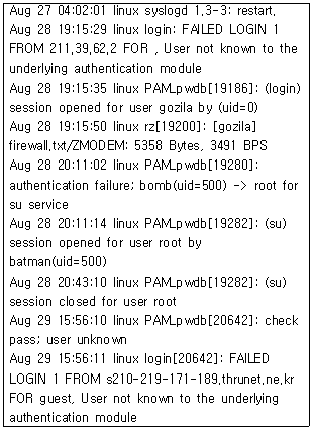
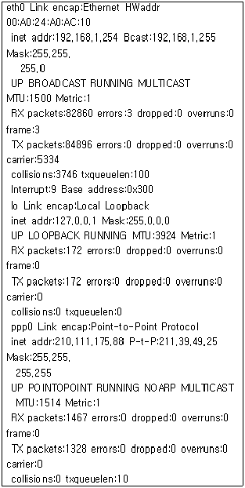
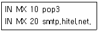
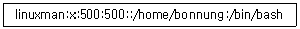
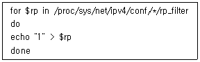
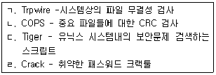
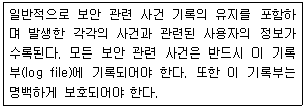

인터넷보안전문가-2급 (2001-02-25 기출문제)
1과목: 정보보호개론
1. PES 암호화 알고리즘에서 발전하였으며, 블록알고리즘으로 64 비트 평문에서 동작하며 키의 길이는 128bit, 8 라운드의 암호화 방식을 지원하는 암호 알고리즘은?
- DES
- Skipjack
- MISTY
- IDEA
(정답률: 알수없음)

2. 다음 중 암호화 알고리즘 성격이 다른 하나는?.
- DES
- Skipjack
- RSA
- FEAL
(정답률: 알수없음)
3. 다음은 사용자 인증시 기본적으로 지켜져야 할 보안원칙들이다. 이중 Redhat linux 6.2 버전의 기본 console login 때 적용되지 않는 보안원칙은? (일반유저가 로그인했을때를 기준으로 한다.)
- 잘못된 암호가 정해진 회수만큼 입력되면 해당사용자의 ID 는 일정시간동안 로그인이 불가능해진다.
- 패스워드는 내부적으로 암호화하여 저장한다.
- 패스워드 구문은 최소 6 자 이상이어야 한다.
- 패스워드 변경시 이전 패스워드가 재사용 되어서는 안된다.
(정답률: 알수없음)
4. 전화접속으로 시스템에 접근할 경우 우선 사용자의 신분을 확인한 후, 시스템이 접속을 단절한 후 사전에 등록된 해당 사용자의 전화번호로 재접속하여 다른 사용자가 승인된 사용자 인 것을 가장하여 전화접속으로 시스템에 접근하는 것을 막는 보안 서비스가 Windows NT 4.0 에 구현되어있다. 이 서비스(기능)의 명칭은?
- RAS Callback
- WINS
- kerberos
- LDAP
(정답률: 알수없음)
5. 다음 중 컴퓨터바이러스 감염을 방지하기 위한 기술적인 예방대책과 거리가 먼 것은?
- 주기적으로 여러 개의 바이러스진단 프로그램을 이용하여 하드디스크를 검사한다.
- 부팅시 바이러스를 점검하는 메모리 상주프로그램이 자동 실행될 수 있도록 한다.
- 실행파일은 읽기전용으로 파일속성을 변경한다.
- 매시간 정기적인 백업을 한다.
(정답률: 알수없음)
6. 국내 침입차단 시스템 평가기준에 대한 설명 중 옳지 않은 것은?
- K0 : 평가신청인이 신청한 침입차단 시스템의 평가결과가 등급별 요구사항을 만족하지 못함을 의미한다.
- K2 : 보안행위에 대한 감사기록을 생성, 관리할 수 있어야하며, 비정형화된 기본설계를 요구한다.
- K3 : 강제적 접근통제와 보안레이블과 같은 부가적인 보안서비스를 이용한 침입차단시스템의 접근통제 강화가 요구된다.
- K6 : K5 등급의 요구조건을 만족함과 동시에 외부침입자의 불법침입 행위를 감지할 수 있는 기능을 제공하여야 한다.
(정답률: 알수없음)
7. 다음 중 침입차단 시스템의 문제점으로 볼 수 없는 것은?
- 제한된 서비스
- 내부 사용자에 의한 보안 침해
- 침입차단 시스템의 네트워크 트레픽 병목발생
- 보안기능의 집중화
(정답률: 알수없음)
8. 다음 정보보안과 관련된 행위 중 법률적으로 처벌할 수 없는 행위는?
- 남의 컴퓨터의 공유자원을 열어서 업무와 관련된 자료를 삭제한 행위
- 정부기관의 DB 자료를 임의로 수정한 행위
- 경품응모행사중인 회사의 웹서버 프로그램의 허점을 이용 경품응모 당첨확률을 높인 행위
- 컴퓨터 바이러스를 제작하여 소스를 공개한 행위
(정답률: 알수없음)
9. 다음 중 전자상거래와 관련하여 설명이 잘못된 것은?
- 전자상거래에서 전자지불시스템은 신용카드, 전자화폐, 전자수표 및 전자자금이체 기반으로 분류할 수 있다.
- SET(Secure Electronic Transaction) 프로토콜은 상점등록, 고객등록, 구매요구 프로토콜 등이 주된 내용이다.
- 전자상거래의 보안요구 사항은 무결성, 비밀성, 인증, 권한부여 등이다.
- 전자상거래의 보안구조는 컴퓨터 보안, 네트워크 보안, 인터넷 보안 등으로 분류할 수 있으며, 인터넷 보안의 주요요소는 접근 및 인원 통제이다.
(정답률: 알수없음)
10. 개인 홈페이지 서버가 해킹을 당하여 모든 자료가 삭제되었을 때 취해야할 행동으로 가장 적절한 것은?
- 로그분석을 통해 해킹을 한사람의 신원을 밝혀내 보복한다.
- 로그분석을 통해 해킹을 한 시점과 방법을 알아내 차후 동일수법에 의한 사고를 방지한다.
- 백업된 자료를 이용하여 그대로 복구하여 놓는다.
- 백도어의 염려가 있으므로 시스템을 포맷한 후 재설치하고, 경찰에 신고한다.
(정답률: 알수없음)
2과목: 운영체제
11. 다음 중 은폐형 바이러스로 기억장소에 존재하며 마치 감염되지 않은 것처럼 백신 프로그램을 속이게끔 설계된 바이러스의 형태는 몇 세대 바이러스 인가?
- 1세대
- 2세대
- 3세대
- 4세대
(정답률: 알수없음)
12. 파일이 생성된 시간을 변경하기 위해 사용하는 리눅스 명령은?
- chmod
- chgrp
- touch
- chown
(정답률: 알수없음)
13. 파일 퍼미션이 현재 664인 파일이 /etc/file1.txt 라는 이름으로 저장되어있다. 이 파일을 batman이라는 사용자의 홈디렉토리에서 ln 명령을 이용하여 a.txt라는 이름으로 심볼릭 링크를 생성하였는데, 이 a.txt 파일의 퍼미션 설정상태는?
- 664
- 777
- 775
- 700
(정답률: 알수없음)
14. 시스템에 Apache Web Server의 RPM버전을 구해서 설치하려고 한다. 하지만 Apache를 설치하려고 하는 Linux Server에 이미 RPM버전의 Apache Web Sever가 설치되어 있는지 확인하지 못하였다. 이 경우 기존 Apache가 설치되어있더라도 안전업그레이드 할 수 있는 옵션은?
- -U
- -u
- -i
- -I
(정답률: 알수없음)
15. 리눅스 콘솔상에서 네트워크어댑터 eth0를 192.168. 1.1이라는 주소로 사용하고 싶을 때 올바른 명령은?
- ifconfig eth0 192.168.1.1 activate
- ifconfig eth0 192.168.1.1 deactivate
- ifconfig eth0 192.168.1.1 up
- ifconfig eth0 192.168.1.1 down
(정답률: 알수없음)
16. 리눅스의 네트워크 서비스에 관련된 설정을 하는 설정파일은?
- /etc/inetd.conf
- /etc/fstab
- /etc/ld.so.conf
- /etc/profile
(정답률: 알수없음)
17. 리눅스 커널 2.2.부터는 smurf 공격 방지를 위해 icmp 브로드캐스트 기능을 막는 기능이 있다. 이 기능을 활성화 시키기 위한 명령으로 올바른 것은?
- echo "1" > /proc/sys/net/ipv4/icmp_echo_broadcast_ignore
- echo "1" > /proc/sys/net/ipv4/icmp_echo_ignore_all
- echo "1" > /proc/sys/net/ipv4/icmp_echo_ignore_broadcasts
- echo "1" > /proc/sys/net/ipv4/icmp_ignore_broadcasts
(정답률: 알수없음)
18. 래드햇 리눅스 6.0이 설치된 시스템에서 RPM 파일로 리눅스 6.0 CD-ROM 안에 들어있는 Apache 프로그램을 이용 웹 사이트를 운영하고 있다. linuxuser 라는 일반 사용자가 자기 홈 디렉토리 하위에 public_html 이라는 디렉토리를 만들고 자기 개인 홈페이지를 만들었는데, 이 홈페이지에 접속하려면 웹 브라우저에서 URL을 어떻게 입력해야 하는가? (서버의 IP는 192.168.1.1 이다.)
- http://192.168.1.1/
- http://192.168.1.1/linuxuser/
- http://192.168.1.1/-linuxuser/
- http://192.168.1.1/~linuxuser/
(정답률: 알수없음)
19. 기존 유닉스 운영체제 같은 경우 사용자의 암호와 같은 중요한 정보가 /etc/passwd 파일안에 보관되기 때문에 이 파일을 이용해서 해킹을 하는 경우가 있었다. 이를 보완하기 위해서 암호정보만 따로 파일로 저장하는 방법이 생겼는데, 이 방식의 명칭은?
- DES Password System
- RSA Password System
- MD5 Password System
- Shadow Password System
(정답률: 알수없음)
20. 한시간에 한번씩 특정한 명령을 수행하고자 할 때 래드햇 리눅스는 어떤 디렉토리 하위에 실행할 명령이 담긴 스크립트를 위치시켜야하는가?
- /etc/cron.hourly
- /var/cron/cron.hourly
- /etc/cron/cron.hourly
- /etc/rc3.d
(정답률: 알수없음)
21. WU-FTP 서버에서 특정 사용자의 FTP 로그인을 중지시키기 위해서 설정해야할 파일은?
- ftpcount
- ftpwho
- hosts.deny
- ftpusers
(정답률: 알수없음)
22. netstat -an 명령으로 시스템의 열린 포트를 확인한 결과 31337 포트가 리눅스 상에 열려 있음을 확인하였다. 어떤 프로세스가 이 31337 포트를 열고 있는지 확인하려면 어떤 명령을 이용해야 하는가?
- fuser
- nmblookup
- inetd
- ps
(정답률: 알수없음)
23. 어떤 시스템의 messages 로그파일의 일부이다. 로그파일의 분석이 잘못된 것은?

- 8월 27일 syslog daemon이 재구동된 적이 있다.
- 8월 28일 gozila라는 id로 누군가 접속한 적이 있다.
- 8월 28일 gozila라는 id로 누군가 접속하여 firewall.txt 파일을 다운 받아갔다.
- batman 이라는 사람이 8월 28일에 su 명령을 사용하여 root 권한을 얻었다.
(정답률: 알수없음)
24. 다음은 어떤 시스템의 ifconfig 내용을 본 결과이다. 해설이 틀린 것은?

- ppp로 받은 내 IP 주소는 210.111.175.88 이다.
- ppp로 받은 내 IP 주소는 211.39.49.25 이다.
- 리눅스의 Ethernet 주소는 192.168.1.254 이다.
- lo는 loopback device를 의미한다.
(정답률: 알수없음)
25. 다음 IP 프로토콜의 어드레스에 관한 설명 중 틀린 것은?
- IP어드레스는 32bit 구조를 가지고 A, B, C, D의 4종류의 클래스로 구분한다.
- 127.0.0.1은 루프백 테스트를 위한 IP주소라고 할 수 있다.
- 클래스 B는 중간 규모의 네트워크를 위한 주소 클래스로 네트워크 ID는 129~191 사이의 숫자로 시작한다.
- 클래스 C는 소규모의 네트워크를 위한 주소 클래스로 네트워크 당 254개의 호스트만을 허용한다.
(정답률: 알수없음)
26. 래드햇 리눅스에 기본으로 제공되는 Bind 8.2 버전의 DNS 시스템에서 Zone 파일에 아래와 같은 구문이 있다. 여기서 두번째 라인(IN MX 20 smtp.hitel.net.)의 역할은?

- 메일을 받을때 pop3 메일서버가 응답이 없으면 smtp.hitel.net 메일서버가 대신 받는다.
- 메일을 받을때 pop3 메일서버 먼저 메일이 배달되고 나중에 smtp.hitel.net 메일서버가 또 받는다.
- 메일을 받을때 pop3 메일서버가 응답이 없으면 smtp.hitel.net 메일서버에 임시 저장된다.
- 메일을 보낼때 pop3 메일서버와 smtp.hitel.net 메일서버 중 부하가 적은 쪽으로 메일을 보낸다.
(정답률: 알수없음)
27. 당신은 linuxman의 계정을 비밀번호가 없이 로그인 되도록 만들려고 한다. 당신의 linux서버는 shadow password system을 사용하고 있고, /etc/passwd에서 linuxman의 부분은 다음과 같다. 어떻게 해야 비밀번호없이 로그인 할 수 있는가?

- /etc/passwd파일의 linuxman의 두번째 필드를 공백으로 만든다.
- /etc/shadow파일의 linuxman의 두번째 필드를 공백으로 만든다.
- /etc/passwd파일의 linuxman의 다섯번째 필드를 "!!"으로 채운다.
- root로 로그인하여 passwd linuxman 명령으로 비밀번호를 바꾼다.
(정답률: 알수없음)
28. Windows 2000 Sever에서 지원하는 PPTP (Point to Point Tunneling Protocol)에 대한 설명으로 잘못된 것은?
- PPTP 헤드 압축을 지원한다.
- IPsec를 사용하지 않으면 터널인증을 지원하지 않는다.
- PPP 암호화를 지원한다.
- IP 기반 네트워크에서만 사용가능하다.
(정답률: 알수없음)
29. 다음 중 Windows 2000 서버에서 감사정책을 설정하고 기록을 남길수 있는 그룹은?
- Administrators
- Security operators
- backup operators
- audit operators
(정답률: 알수없음)
30. Windows 98 Client에서 컴퓨터이름이 testsrv 라고 설정되어있는 Windows 2000 서버의 c:\winnt 폴더에 접근하고자 한다. testsrv 서버는 관리자가 C:\winnt 디렉토리 공유를 설정하여 놓지 않은 상태이다. 관리목적용 기본 공유설정을 이용해서 testsrv 서버의 C:\winnt 폴더에 접근할 수 있는 올바른 방법은?
- 관리목적용 공유를 이용하더라도 서버에 디렉토리는 접근할 수 없다.
- Windows 98 실행창에서 \\testsrv\admin$을 입력하여 접근한다.
- Windows 98 실행창에서 \\testsrv\winnt를 입력하여 접근한다.
- Windows 98 실행창에서 \\testsrv\netlogon을 입력하여 접근한다.
(정답률: 알수없음)
3과목: 네트워크
31. 다음 중 Windows 2000 서버 운영체제에서 이벤트를 감사할 때 감사할 수 있는 항목이 아닌 것은?
- 파일 폴더에 대한 액세스
- 사용자의 로그온과 로그오프
- 메모리에 상주된 프로세스의 사용빈도
- 액티브 디렉토리에 대한 변경시도
(정답률: 알수없음)
32. Media Access Control 프로토콜과 Logical Link Control 프로토콜은 OSI 7계층 중 몇 번째 계층에 속하는가?
- 1 계층
- 2 계층
- 3 계층
- 4 계층
(정답률: 알수없음)
33. 네트워크 장비 중 Layer 2 스위치가 의미하는 것은?
- 포트기반의 스위칭
- Media Access Control Address 기반의 스위칭
- IP 주소기반의 스위칭
- 컴퓨터이름을 기반으로 한 스위칭
(정답률: 알수없음)
34. 방화벽에서 내부 사용자들이 외부 FTP에 자료를 전송하는 것을 막고자 한다, 외부 FTP에 Login은 허용하되, 자료전송만 막으려면 다음 중 몇 번 포트를 필터링 해야 하는가?
- 23
- 21
- 20
- 25
(정답률: 알수없음)
35. TCP는 연결 설정과정에서 3-way handshaking 기법을 이용하여 호스트 대 호스트의 연결을 초기화 한다. 다음 중 호스트 대 호스트 연결을 초기화할 때 사용되는 패킷은?
- SYN
- RST
- FIN
- URG
(정답률: 알수없음)
36. 다음 중 TCP/IP Sequence Number(순서번호)가 시간에 비례하여 증가하는 운영체제는?
- HP-UX
- Linux 2.2
- MS Windows
- AIX
(정답률: 알수없음)
37. TCP/IP 프로토콜을 이용해 클라이언트가 서버의 특정포트에 접속을 하려고 할 때 서버가 해당포트를 열고 있지 않다면 응답 패킷의 코드비트에 특정 비트를 설정한 후 보내 접근할 수 없음을 통지하게 된다. 다음 중 클라이언트가 서버의 열려있지 않은 포트에 대한 접속에 대해 서버가 보내는 응답패킷의 코드비트 내용이 올바른 것은?
- SYN
- ACK
- FIN
- RST
(정답률: 알수없음)
38. IPv4 패킷의 헤더에 DF비트가 1 로 설정이 되어있는 10000 바이트의 UDP 패킷을 MTU가 1500으로 설정되어 있는 네트워크에 속한 라우터에게 전달하였을 때 일반적으로 예상되는 라우터의 반응은?
- 알맞는 MTU 크기로 패킷을 자른 후 전송한다.
- 패킷을 재조합한다.
- 패킷을 자를 수 없다는 오류를 발생시킨다.
- 라우터의 모든 동작이 중단되며, 재부팅이 필요해진다.
(정답률: 알수없음)
39. TCP/IP 프로토콜을 이용해서 서버와 클라이언트가 통신을 할 때, Netstat 명령을 이용해 현재의 접속상태를 확인할 수 있다. 클라이언트와 서버가 현재 올바르게 연결되어 통신중인 경우 netstat 으로 상태를 확인하였을 때 어떤 메시지를 확인할 수 있는가?
- SYN_PCVD
- ESTABLISHED
- CLOSE_WAIT
- CONNECTED
(정답률: 알수없음)
40. TCP의 header의 구성은?
- 각 32비트로 구성된 6개의 단어
- 각 6비트로 구성된 32개의 단어
- 각 16 비트로 구성된 7개의 단어
- 각 7비트로 구성된 16개의 단어
(정답률: 알수없음)
41. 다음 중 IGRP(Interior Gateway Routing Protocol)의 특징이 아닌 것은?
- 거리벡터 라우팅 프로토콜.
- 메트릭을 결정할 때 고려요소 중 하나는 링크의 대역폭이 있다.
- 네트워크 사이의 라우팅을 최적화에 효율적.
- 링크상태 프로토콜로 메트릭의 비용을 이용한 라우팅.
(정답률: 알수없음)
42. Broadcast and Multicast의 종류와 그에 대한 설명으로 옳지 않은 것은?
- unicast - 메시지가 임의의 호스트에서 다른 호스트로 전송되는 방식을 말한다.
- broadcast - 메시지가 임의의 호스트에서 네트워크상의 모든 호스트에 전송되는 방식을 말한다.
- multicast - 메시지가 임의의 호스트에서 네트워크 상의 특정 호스트(Group)에 전송되는 방식을 말한다.
- broadcast - 메시지가 네트워크 상의 모든 호스트로부터 임의의 호스트에 전송되는 방식을 말한다.
(정답률: 알수없음)
43. 다음 중 T3회선에서의 데이터 전송속도는?
- 45Mbps
- 128Kbps
- 1.544Mbps
- 65.8Mbps
(정답률: 알수없음)
44. 방화벽의 세 가지 기능이 아닌 것은?
- 패킷필터링(packet filtering)
- NAT(Network Address Translation)
- VPN(Virtual Private Network)
- 로깅(logging)
(정답률: 알수없음)
45. 다음 중 알려진 취약점을 알아보는 스캐너의 종류가 아닌 것은?
- SAINT
- MSCAN
- ISS
- Squid
(정답률: 알수없음)
4과목: 보안
46. DoS (Denial of Service) 의 개념과 거리가 먼 것은?
- 다량의 패킷을 목적지 서버로 전송하여 서비스를 불가능하게 하는 행위
- 로컬 호스트의 프로세스를 과도하게 fork 함으로서 서비스에 장애를 주는 행위
- 서비스 대기중인 포트에 특정 메세지를 다량으로 보내 서비스를 불가능하게 하는 행위
- 익스플로잇을 사용하여 특정권한을 취득하는 행위
(정답률: 알수없음)
47. IIS를 통하여 Web서비스를 하던 중 .asp 코드가 외부 사용자에 의하여 소스코드가 유출되는 버그가 발생하였다. 기본적으로 취해야 할 사항이 아닌 것은?
- 중요 파일(global.asa 등)의 퍼미션을 변경 혹은 파일수정을 통하여 외부로부터의 정보유출 가능성을 제거한다.
- .asp의 권한을 실행권한만 부여한다.
- C:\WINNT\System32\inetsrv\asp.dll에 매칭되어있는 .asp를 제거한다.
- .asp가 위치한 디렉토리와 파일에서 Read 권한을 제거한다.
(정답률: 알수없음)
48. 다음 중 32비트 IP주소를 48비트 이더넷 주소로 변환하는 프로토콜은?
- ARP
- RARP
- IGMP
- ICMP
(정답률: 알수없음)
49. 버퍼 오버 플로우(Buffer Overflow) 개념으로 틀린 것은?
- 스택의 일정부분에 익스플로잇 코드(exploit code)를 삽입하고 어떤 프로그램의 리턴 어드레스(return address)를 익스플로잇 코드(exploit code)가 위치한 곳으로 돌린다.
- 대체적으로 문자열에 대한 검사를 하지 않아서 일어나는 경우가 많다.
- 소유자가 root인 setuid가 걸린 응용프로그램인 경우 익스플로잇 코드(exploit code)를 이용 root의 권한을 획득할 수 있다.
- main 프로그램과 sub 프로그램의 경쟁관계와 setuid를 이용하여 공격하는 패턴이 존재한다.
(정답률: 알수없음)
50. IIS 서비스에서 현재까지 나타난 취약점이 아닌 것은?
- %aa %ee (지정된 URL 뒤에 %aa 등을 기입함으로서 소스코드 유출)
- Unicode Bug (유니코드를 이용하여 웹 서비스 상위의 디렉토리나 파일에 접근가능)
- wtr Bug(global.asa같은 특정파일의 URL에 +.wtr를 적어줌으로서 권한이 없는 디렉토리나 파일상에 접근가능)
- ::$DATA(asp 같은 보이지 않는 코드에 ::$data를 적어줘서 소스코드 유출)
(정답률: 알수없음)
51. 다음 중 SSL (Secure Socket Layer)의 개념이 아닌 것은?
- 연결시에 클라이언트와 서버는 전송중인 데이터를 암호화하기 위해 비밀키를 교환한다. 그러므로 도청되더라도 암호화 되어있어 쉽게 밝혀낼 수 없음.
- 클라이언트는 서버에게 접속시 인증서를 요구하고 자신의 비밀키를 이용한 암호화 방식으로 데이터를 암호화하여 전송하므로 스니핑의 방지가 가능.
- 공용키 암호화를 지원하기 때문에 RSA나 전자서명표준 같은 방법을 이용하여 사용자를 인증할 수 있음.
- MD5나 SHA같은 메시지 다이제스트 알고리즘을 통해서 현재 세션에 대한 무결성검사를 할 수 있기 때문에 세션을 가로채는 것을 방지할 수 있음.
(정답률: 알수없음)
52. 다음은 인바운드 서비스 이용에 대한 주요한 위험 요소의 설명이다. 거리가 먼 것은?
- 하이재킹 - 시스템에 사용자가 인증을 받은 후 누군가가 그 연결(session)을 훔치는 것
- 파일 크랙 - 암호가 걸린 대외비의 정보 파일을 누군가가 암호를 깨뜨리고 정보를 읽어내는 것
- 패킷 스니핑 - 대외비의 데이터가 네트워크를 통과할 때 데이터의 간섭 없이 누군가가 그 데이터를 읽는 것
- 잘못된 인증 - 시스템이 정당하지 않은 사용자를 정당한 사용자로 확신하는 것
(정답률: 알수없음)
53. 커널버전 2.2. 에서 다음 스크립트의 역할은?

- 각 랜카드의 포트 필터링 기능을 활성화 한다.
- 각 랜카드의 IP 필터링 기능을 활성화 한다.
- 각 랜카드의 ARP Spoofing 방지 기능을 활성화 한다.
- 각 랜카드의 IP Spoofing 방지 기능을 활성화 한다.
(정답률: 알수없음)
54. Ipchains 프로그램을 이용해서 192.168.1.1 의 80 번 포트로 향하는 패킷이 아닌 것을 모두 거부하고 싶을 때 input 체인에 어떤 명령을 이용해서 설정해야 하는가?
- ipchains -A input -j DENY -d ! 192.168.1.1 80
- ipchains -A input -j DENY -d 192.168.1.1 ! 80
- ipchains -A input -j DENY -s ! 192.168.1.1 80
- ipchains -A input -j DENY -s 192.168.1.1 ! 80
(정답률: 알수없음)
55. Nmap의 옵션 중 상대방의 OS를 알아내는 옵션은?
- [root@icqa bin]#./nmap -O www.target.com
- [root@icqa bin]#./nmap -I www.target.com
- [root@icqa bin]#./nmap -sS www.target.com
- [root@icqa bin]#./nmap -Os www.target.com
(정답률: 알수없음)
56. 시스템 상에서 Rootkit의 역할이 아닌 것은?
- 불법적인 권한을 다시 획득하는 역할을 수행한다.
- 시스템상에서 침입자의 흔적을 지워주는 역할을 수행한다.
- 정상적인 프로그램처럼 보이지만 내부에 악의적인 코드가 내장되어있다.
- 자가복제를 통해 자신의 존재를 숨기면서 다른 시스템과 다른 접속을 시도한다.
(정답률: 알수없음)
57. TCPdump라는 프로그램을 이용해서 192.168.1.1 호스트로부터 192.168.1.10 이라는 호스트로 가는 패킷을 보고자 한다. 올바른 명령은?
- tcpdump src host 192.168.1.10 dst host 192.168.1.1
- tcpdump src host 192.168.1.1 dst host 192.168.1.10
- tcpdump src host 192.168.1.1 and dst host 192.168.1.10
- tcpdump src host 192.168.1.10 and dst host 192.168.1.1
(정답률: 알수없음)
58. 다음 내용 중 내부점검 도구명과 그 기능이 맞는 것으로 묶여진 것은?

- ᄀ
- ᄀ,ᄃ
- ᄀ,ᄃ,ᄅ
- ᄀ,ᄂ,ᄃ,ᄅ
(정답률: 알수없음)
59. 다음 내용은 보안 운영체제의 특정한 보안기능에 대해 설명한 것이다. 어떤 기능을 말하고 있는가?

- 사용자 식별 또는 인증
- 감사 및 감사 기록
- 강제적/임의적 접근 통제
- 침입탐지
(정답률: 알수없음)
60. DDoS(Distrivuted Denial of Service)로 알려진 프로그램이 아닌 것은?
- Trinoo
- TFN
- Stacheldraft
- Teardrop
(정답률: 알수없음)